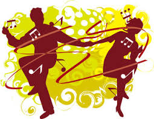
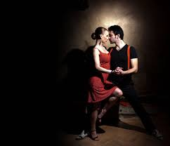

La Salsa, du mot espagnol "sauce", apparue dans les années 60 aux USA avec les migrants cubains, désigne un genre musical et à la fois une danse. Les chanteurs, musiciens et danseurs de Salsa sont aussi appelés "salsero", les cavalières "salsera".
La Salsa se danse en 8 temps. Six temps sont dansés, et deux autres sont des temps de pause. On les compte souvent ainsi : 1,2,3 ET 5,6,7 ou parfois 1,2,3 ... 5,6,7. Il n'y a pas de règle établie mais ce qu'il faut comprendre, c'est que l'on doit marquer une pose même si l'on ne fait pas de pas, pour les temps 4 et 8. Les pas du cavalier et de la cavalière s'effectuent en miroir : lorsque le cavalier effectue les pas des 4 premiers temps, la cavalière effectue ceux des 4 derniers, qui sont inversés. Par exemple, si le cavalier déplace son pied gauche, la cavalière déplace son pied droit. Il existe plusieurs variantes du pas de base : le "pas de Mambo", le "pas de Salsa ou Casino", le "pas croisé", le "pas Rumba", le "pas marché" ... mais tous ont en commun les pauses sur les temps 4 et 8. Il faut absolument les maîtriser en musique avant de se lancer dans la réalisation de figures.
l existe deux courants fort de Salsa, la "Portoricaine" et la "Cubaine". L'appellation "Portoricaine" est typiquement française, il s'agit en fait de la Salsa de style "New Yorkaise". Elle est plus démonstrative, se danse en ligne et comporte de nombreux jeux de jambes. Dérivée du Mambo, elle se danse sur le 2ème temps de la musique, le temps faible, et le changement de direction ou "break" s'effectue donc sur ce temps. Le style new-yorkais (NY style, ou on2) se danse sur le temps faible, ce qui signifie que le changement de direction (le break) s'effectue sur le 2e temps de la demi-phrase musicale (temps 2 et 6 de la phrase musicale). Il dérive du mambo et du Cha cha. Il s'agit du style où la danseuse tourne le plus sur elle-même. On peut le qualifier de plus musical : il inclut en particulier de nombreux jeux de jambes (shines, de l'anglais shoe shine signifiant « cirage de chaussure », comme le Suzie Q).